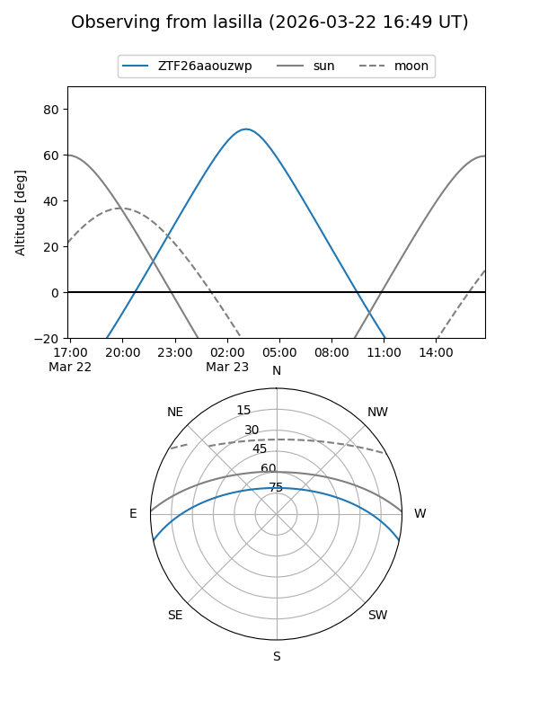
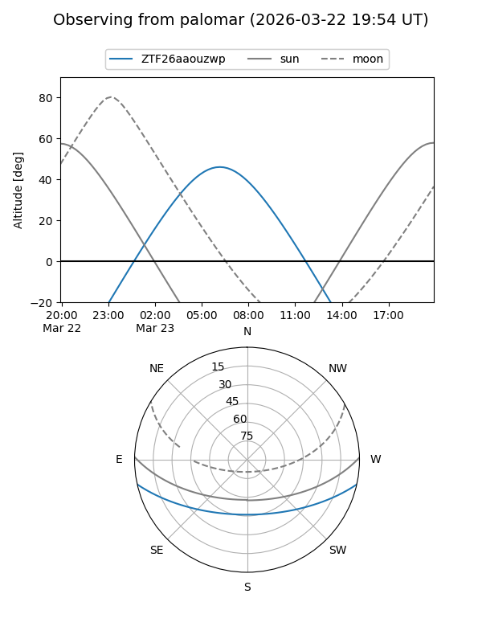

ZTF26aaouzwp
Target ZTF26aaouzwp at 2026-03-23 08:18
Aliases and brokers:
FINK: link
Lasair: link
ALeRCE: link
alt names
ZTF26aaouzwp (ztf,fink_ztf)
Coordinates:
equatorial (ra, dec) = 155.9258,-10.42673
equatorial (HMS+DMS) = 10:23:42.20,-10:25:36.22
galactic (l, b) = (254.2513,+38.10653)
Flags:
Photometry:
last ztfg=17.24
1 ztfg detections
Lightcurve
Visibility


Additional plots